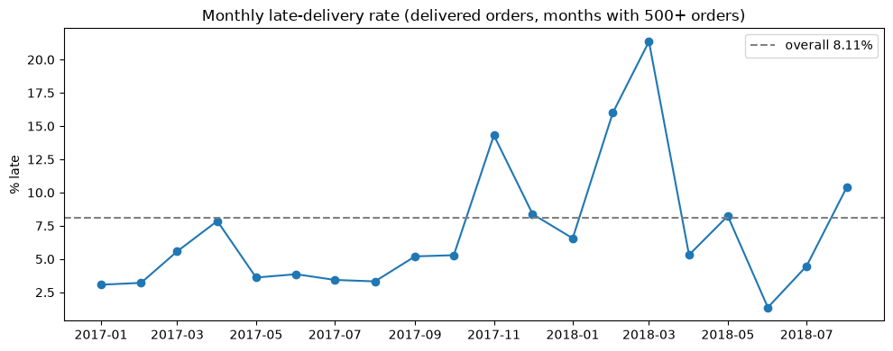
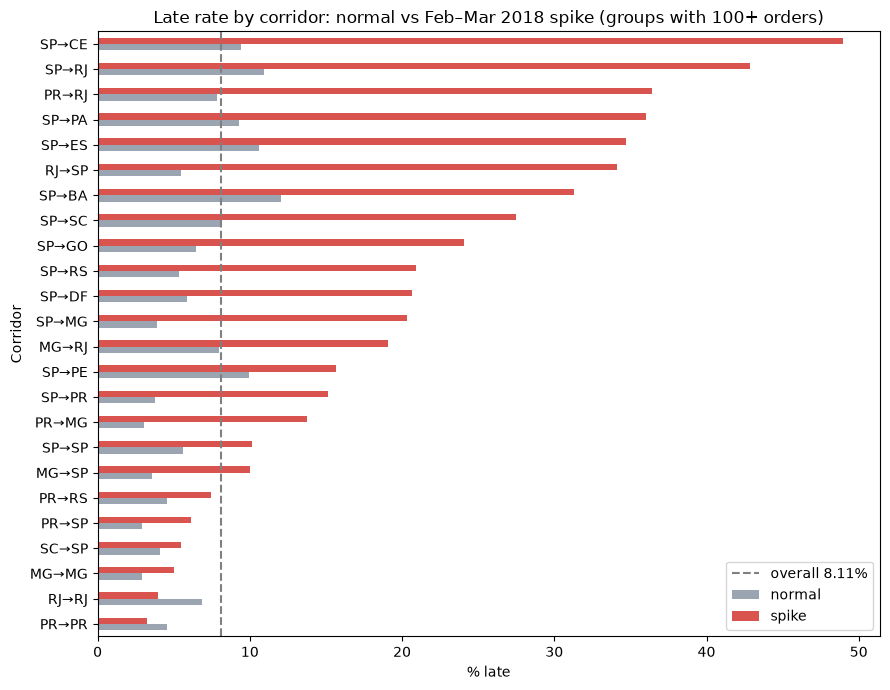

Late Deliveries (Olist)
Project page · Rendered notebook · Download .ipynb
Question
Which origin→destination routes / seller areas miss the promised window most, and is lateness getting worse?
An order is late when order_delivered_customer_date > order_estimated_delivery_date. Delivered orders only. Grain: one order in olist_orders_dataset, joined to sellers (origin state) and customers (destination state).
Data
Brazilian E-Commerce Public Dataset by Olist (Kaggle). Four tables used: orders (99441, 8), order_items (112650, 7), sellers (3095, 4), customers (99441, 5).
Methods and tools
Python, pandas, PostgreSQL, SQLAlchemy, SQL (CTEs, FILTER, BOOL_OR), matplotlib
- Profiled
ordersin pandas: status mix and nulls on the delivery date columns (order_status: delivered 96478, shipped 1107, canceled 625, …). - Kept delivered orders only, counted the 8 delivered orders missing a delivery or estimate date, then dropped them before computing the rate.
- Loaded the four CSVs into a local PostgreSQL database
olistwith pandasto_sqlthrough a SQLAlchemy engine, and re-checked the overall rate in SQL. - SQL with CTEs: joined orders → order_items → sellers and customers, collapsed to one row per order per corridor with
BOOL_OR(is_late)(an order can have several items/sellers), and usedCOUNT(*) FILTER (WHERE …)for late counts. - Minimum-volume thresholds: corridor × period groups with 100+ orders, seller states with 500+ orders, sellers with 50+ orders, months with 500+ orders.
- Tagged purchases from 2018-02-01 to 2018-03-31 as the spike period vs normal, and compared corridor late rates between the two.
Key findings
- Overall late rate: 8.11%: 7826 late out of 96470 late-eligible delivered orders (99441 orders total, 96478 delivered, 8 delivered orders missing dates). The SQL check returned the same: (96470, 7826, 8.11).
- Monthly late rate (months with 500+ delivered orders) peaked at 14.31% in 2017-11, 15.99% in 2018-02 and 21.36% in 2018-03, versus a low of 1.36% in 2018-06.
- Feb–Mar 2018 spike vs normal period, SP-origin corridors:
Corridor Normal % late Spike % late (Feb–Mar 2018) SP→CE 9.43 48.95 SP→PA 9.26 36.00 SP→ES 10.61 34.74 SP→GO 6.48 24.09 SP→DF 5.85 20.63 SP→PE 9.92 15.66 - Non-SP corridors with the highest spike-period rates (100+ orders): PR→RJ 36.45% (74 of 203) and RJ→SP 34.15% (56 of 164).
- By seller state (500+ orders): SP 8.74% on 68635 orders, RJ 8.40% on 4227, down to RS 4.28% on 1962.
- Among sellers with 50+ orders, the highest late rate was 30.14% (22 of 73 orders, a PR seller); an MA seller had 23.14% on 389 orders.
Numbers are taken directly from the notebook outputs.
Charts


Reproduce
- Download the Olist CSVs from Kaggle (link above) into the project folder. The CSVs are not included in this repo.
- Create a local PostgreSQL database named
olist. - Put the database password in
~/.pgpass(for example127.0.0.1:5432:olist:postgres:YOUR_PASSWORD, file mode600), not in the connection URL. - Connect with SQLAlchemy using a URL without a password, e.g.
create_engine("postgresql+psycopg2://postgres@127.0.0.1:5432/olist"); libpq reads the password from~/.pgpass. - Run the notebook top to bottom: it loads the CSVs into Postgres with
to_sqland runs the SQL.
Notebook
View the rendered notebook with all saved outputs, or download the .ipynb.